01—04
Bring everyone together.
Host a party, set up background hosting, and watch the lobby fill.

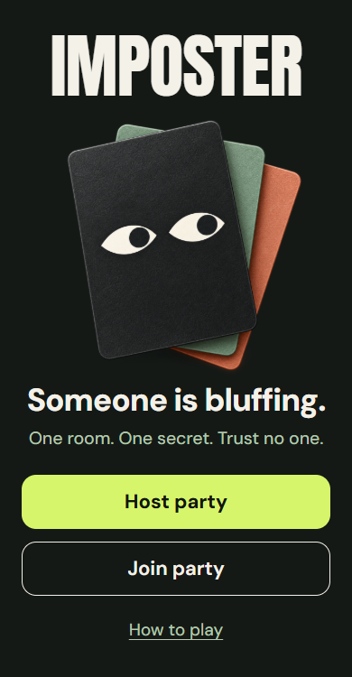

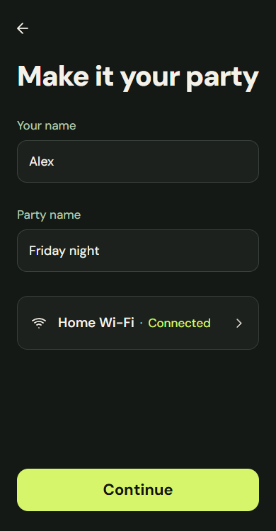

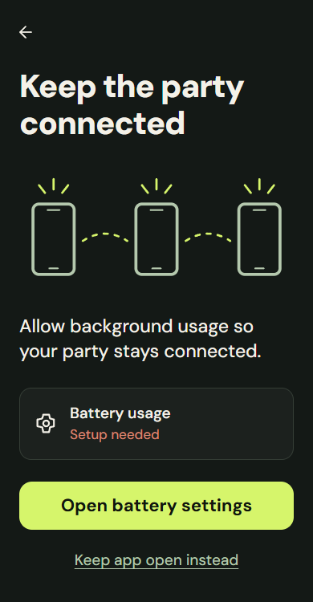

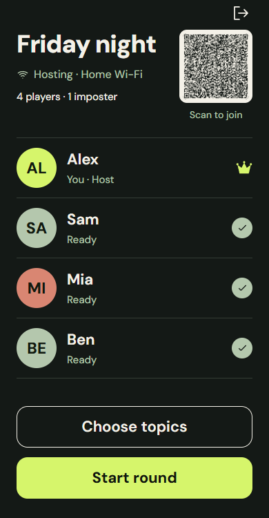
Someone is bluffing.
One room. One secret.
Trust no one.
A secret word on every phone. A convincing liar in every round. Find your imposter before they fool the room.
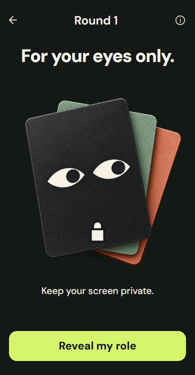
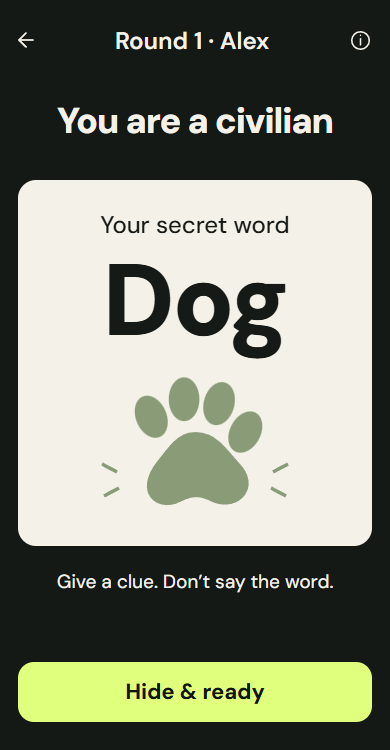
01 / The game
Everyone gets the same secret word. Except one player, who knows they're the imposter and only gets a hint.
One Android phone hosts. Everyone scans its QR to join on their own phone, through a browser or the Android app. Internet isn't needed for the game.
Tap to reveal your word or your imposter hint. Hide it, mark ready, and put on your best innocent face.
Take turns giving clues without saying the word. Talk it out face to face, for as long as you like. The host opens voting when everyone's ready.
Everyone casts a private ballot. The player with the most votes is accused. A tie gets one runoff; another tie lets the imposter escape.
Wrong guesses and a caught imposter take Drink, Dare, or Skip turns, one at a time. For a dare, the app names a friend to invent it. Check the rankings and play another round.
02 / Bragging rights
Scores add up across rounds. The host calls the last round; the highest total gets the bragging rights.
A civilian's original vote correctly identified the imposter.
The imposter escaped the most votes.
Fresh random roles every round. Yes, the same friend can be the imposter twice in a row.
03 / Set the mood
22 topic packs. 221 word-and-hint pairs. The host chooses the topics; sensitive packs stay opt-in.
Your role starts concealed on your own device. Reveal it when you're ready, then hide it before the clues begin.
The host runs the party over local Wi-Fi. Friends can mix installed Android apps and browsers in one game.
Drink, Dare, or Skip. A soft drink counts. Dares happen between friends, away from the app, and skipping never costs points.
04 / Inside the app
Real captures from the app, using a sample party. Scroll each row on smaller screens. Tap any screen for a closer look.
Host a party, set up background hosting, and watch the lobby fill.




Scan inside the Android app, check the connection, and take your place.
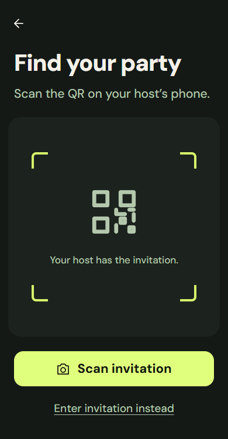
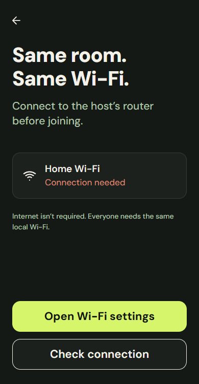
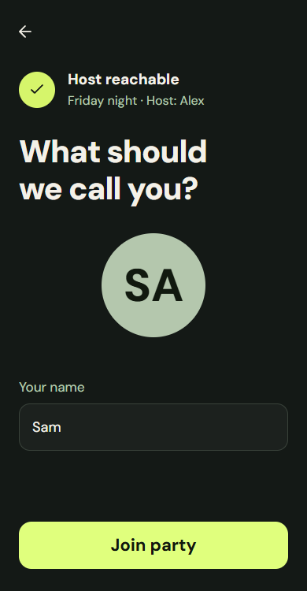
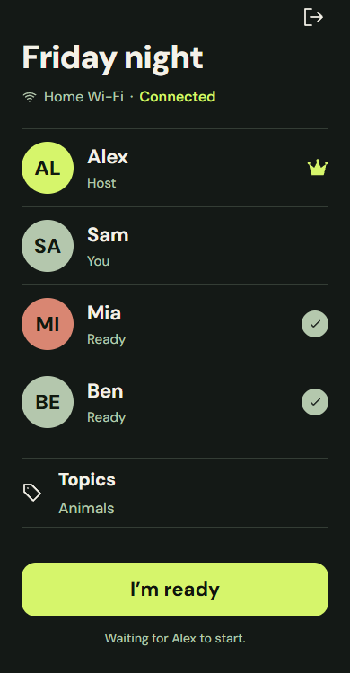
Choose topics, reveal privately, and keep your face under control.
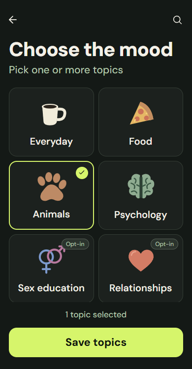
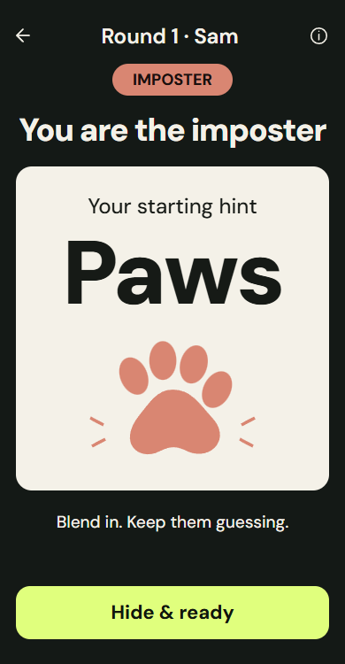
Talk it out, lock your secret ballot, and find out who fooled whom.
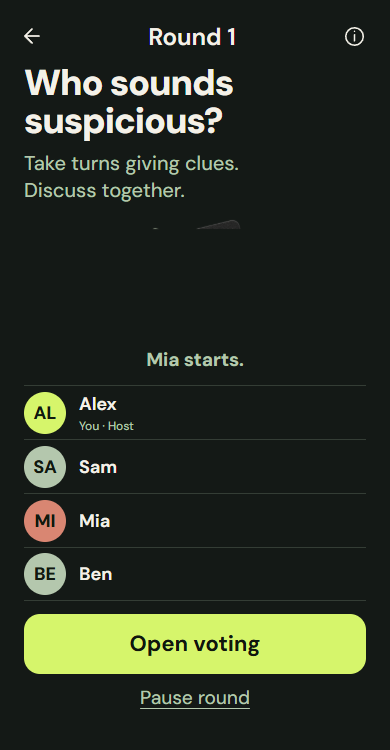
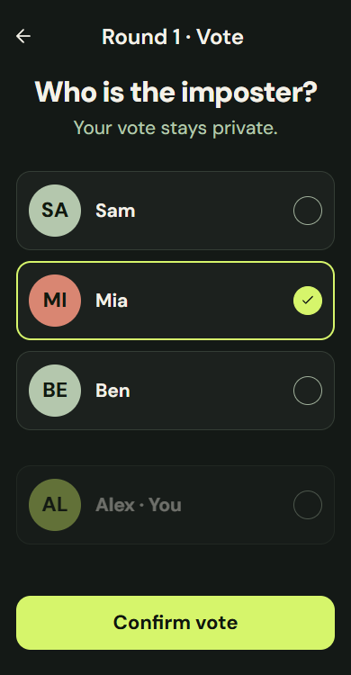
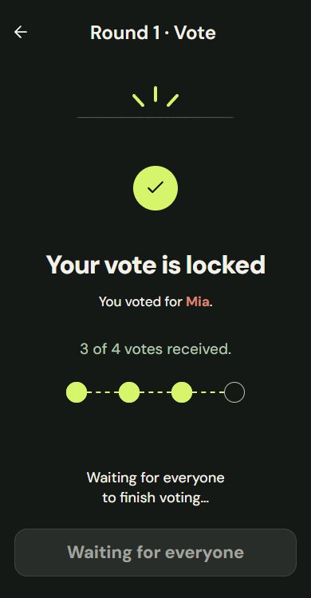
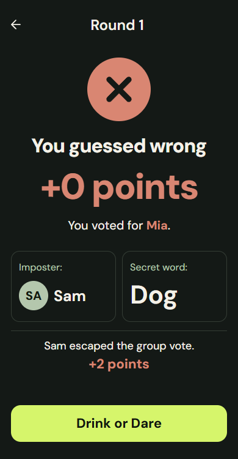
One player at a time. A drink, a human-given dare, or a guilt-free skip.
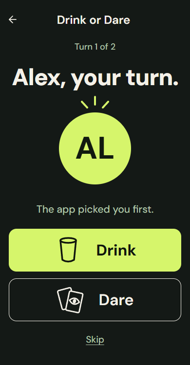
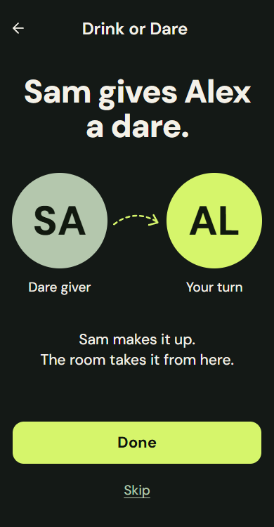
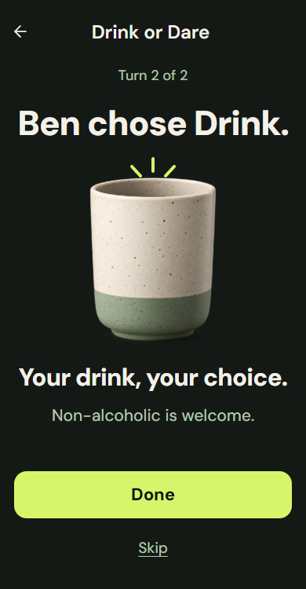
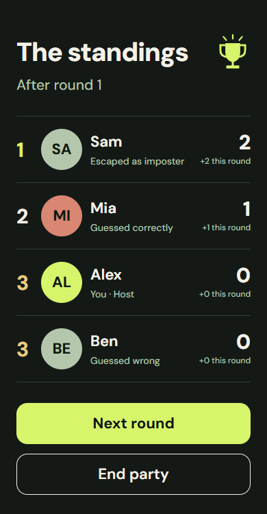
A second vote for ties, reconnecting, final standings, and help along the way.
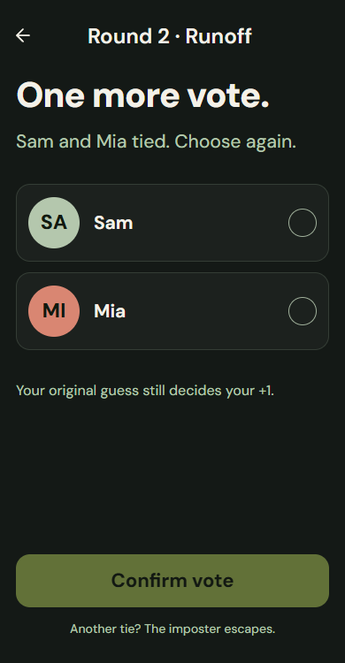
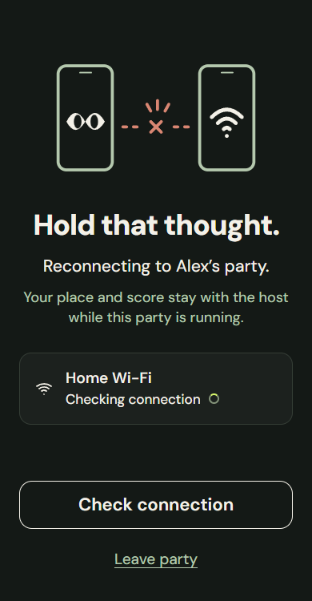
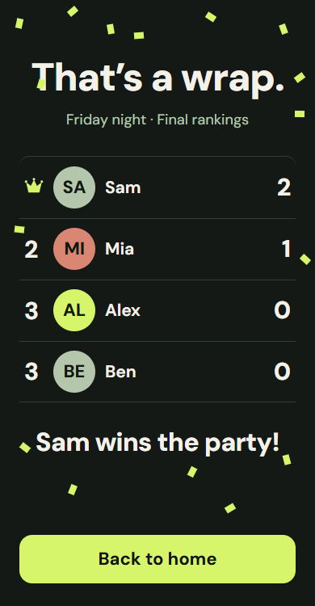
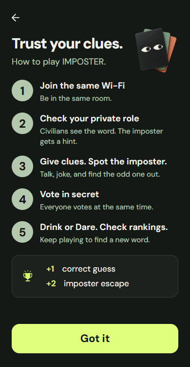
New in 1.1.0
Only the Android host needs the app. iPhone and Android friends can open the invitation in their chosen browser. Installed Android players can use Imposter's scanner instead.
The host serves the entire game over your shared Wi-Fi. No public game server. No accounts. No internet needed after installation.
Get the previewPhysical iPhone and shared-router checks are still pending. Browser play uses unencrypted local HTTP; use Wi-Fi you trust. This website is the download page—join a game using your host's local QR.
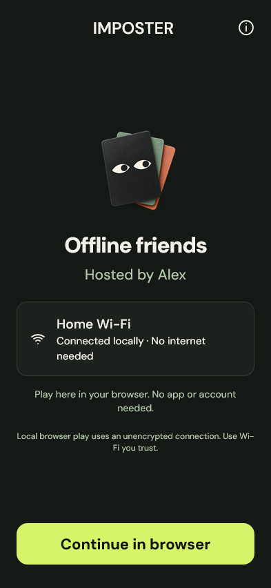
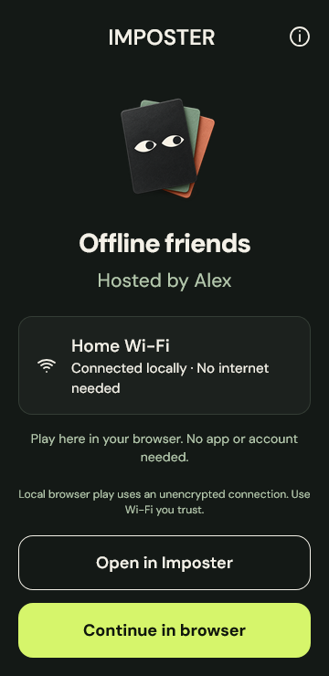
Your next game night
Download the host app. Gather 3–12 friends.
Try to keep a straight face.
Download the APK on your Android phone, open it, and allow installation from your browser when Android asks. Version 1.1.0 uses the same signing key as 1.0.0, so it can update your existing installation.
Yes, through the browser guest flow. Connect to the host's Wi-Fi before scanning the party QR, then open the link in your preferred browser. The 1.1.0 flow passed automated WebKit checks; physical iPhone testing is still pending.
Only to download the host app. Once installed, gameplay runs on the host's local Wi-Fi network. Connect every phone to the same reachable router. Some guest Wi-Fi networks isolate devices and prevent joining. Keep the host app available throughout the game.
Version 1.0.0 is the stable native-only release. Each player needs the Android app for that version. Use 1.1.0 to try mixed app and browser play.